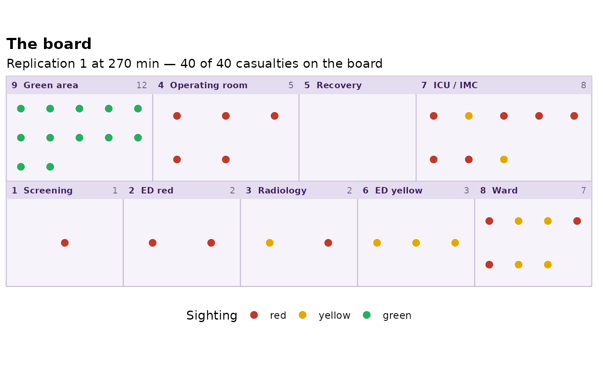
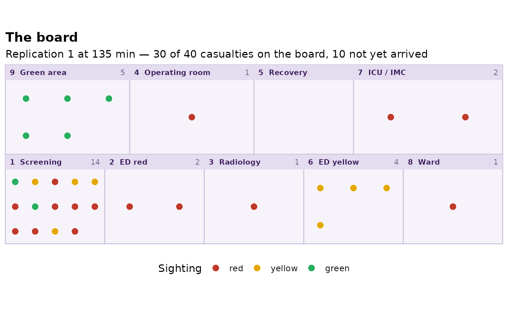

The picture the exercise is played on: the nine areas of the published board
laid out as in the source's Fig. 1, with every casualty drawn as a point in
the area it had reached by a given moment. Scrub at across the game and
you watch the casualty stream move over the board, which is the one view
that makes a decision path legible without reading a table.
Arguments
- run
A
game_runfromsdt_simulate().- at
Time in minutes to draw. Defaults to the end of the game.
- replication
Which replication to draw.
- interactive
If
TRUEand ggiraph is installed, draw the casualties as interactive points carrying a tooltip with the patient card. Wrap the result inggiraph::girafe()to get the interactivity; it renders as an ordinary plot otherwise.
Details
A casualty's area at time at is the last area it had entered by then,
which is the same rule summary.game_run() uses. That matters at the end of
the game: someone still being operated on when the clock stops is in
theatre, not back where they came from.
See also
sdt_plot_flow() for the same event log as a Gantt chart.
Examples
run <- sdt_simulate(sdt_reference_scenario(), replications = 1,
seed = 1, verbose = FALSE)
sdt_plot_board(run)

# Halfway through the game.
sdt_plot_board(run, at = sdt_reference_horizon() / 2)
